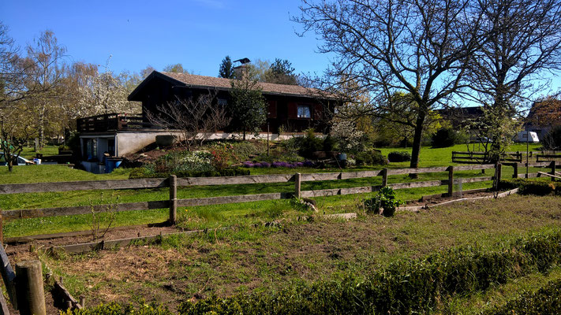
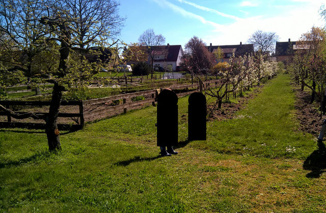

Pachtgärten
Auf dem Gelände des OGV an der Kronauer-Allee befinden sich mehrere Pachtgärten in unterschiedlichen Größen, die gepachtet werden können.


Hier können Sie sich den Pachtvertrag für den OGV Forst herunterladen.